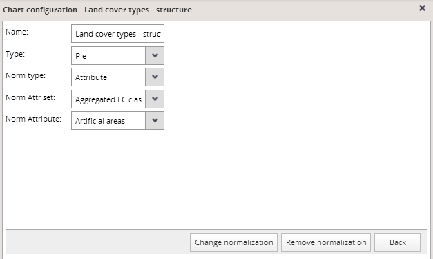
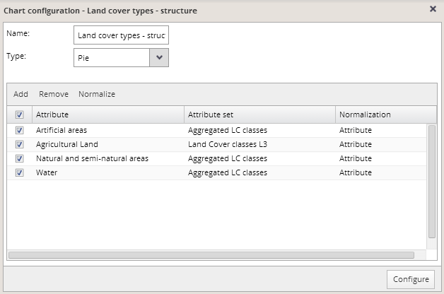
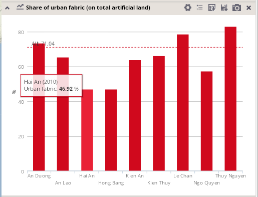

To normalize an attribute value by another attribute value, select "Attribute" in the "Norm type" menu.
Then specify the attribute set and attribute for normalization and click the "Change normalization" button at the bottom of the card.

After that, normalization by "Attribute" will be indicated in the "Normalization" column in the chart configuration dialog:

Normalization by attribute is a proper solution when you need to display the share of two different attributes, with a denominator other than unit area, for example the share of urban fabric on the total artificial land in the unit:
